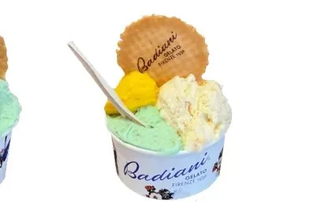
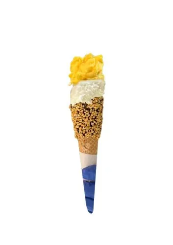
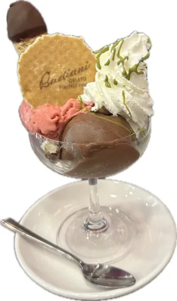

Manuale per il banco gelato: porzioni, servizio take me home, coppe scenografiche e manutenzione della vetrina
a -14/-15 °C.
Gelato Lab
Linea gelato
CupsPiccolo 100g
Coppette

Coppette in tre misure: Piccolo (1 gusto, 100 g), Medio (1-2 gusti, 140 g), Grande (1-3 gusti, 180 g).
La chiave è dosare correttamente il gelato e compattarlo bene per eliminare bolle d'aria e dare una presentazione uniforme.
Pesatura: Piccolo 100-120g, Medio 160-200g, Grande 200-240g (controlla sempre)
Tecnica scoop: lineare + ball per look professionale
Compattamento: spingi il gelato sul lato della coppetta eliminando aria
Ammorbidimento spatola: scaldala passandola sul gelato per facilitare il prelievo
Completamento: offri sempre wafer e panna (upselling)
Temperatura ideale gelato: -14/-15°C (se più caldo è difficile da dosare)
1 · Scalda spatola passando sul gusto per ammorbidirlo.2 · Spingi gelato sul lato della coppetta eliminando aria.3 · Offri wafer/panna e sorridi.
Bambini possono scegliere due gusti anche sul piccolo.
💰 UpsellingOpzione 1: "Vuoi passare al medio? Aggiungi un altro gusto e panna"Opzione 2: "Ti aggiungo panna montata e wafer croccante?"Opzione 3: "Con salsa al pistacchio diventa ancora più goloso"
🛠️ Pro tip: Pesa sempre le coppette per rispettare range grammi. Usa tecnica "scoop lineare + ball" per look professionale. Temperatura gelato ideale: -14/-15°C.
ConiGF & Choco
Coni classici

Coni in tre varianti: Classico (1 gusto), Cioccolato o Gluten Free (1-2 gusti). Ogni cono va avvolto con tissue per grip e presentazione.
Mantieni l'area dei coni sempre pulita per evitare contaminazioni di sapori.
Avvolgimento: tissue sempre, per grip e look
Dosaggio: 1 ball per cono piccolo, 1-2 ball per coni speciali (choco/GF)
Posizionamento: appoggia la ball ruotando il cono per stabilità
Pulizia area: ogni 30 minuti elimina briciole (assorbono umidità)
Stock rotation: FIFO rigoroso (i coni assorbono umidità, usa quelli meno freschi prima)
Upgrade upsell: cono cioccolato (ricoperto dentro e fuori), panna montata
1 · Avvolgi cono con tissue.2 · Prepara ball e appoggiala ruotando.3 · Proponi upgrade al cono choco o panna montata.
Mantieni l'area dei coni pulita eliminando briciole.
💰 UpsellingOpzione 1: "Upgrade al cono cioccolato? è ricoperto dentro e fuori"Opzione 2: "Cono gluten-free disponibile (se presente)"Opzione 3: "Vuoi panna montata sopra per look Instagram?"
🛠️ Pro tip: Pulisci area coni ogni 30 minuti per eliminare briciole. Rotazione stock: i coni assorbono umidità, usa FIFO rigoroso. Avvolgi sempre con tissue per grip.
Box500-1000 ml
Gelato Boxes
Gelato da asporto in box termici da 500/750/1000 ml. Ogni box mantiene il gelato al giusto stato per circa 1 ora se messo nella borsa termica.
Comunica sempre al cliente di mettere subito in freezer a casa: il gelato cambia di consistenza quando si scongela.
Piccolo: 500 ml (1-3 gusti)
Medio: 750 ml (1-4 gusti)
Grande: 1000 ml (1-5 gusti)
Ordine inserimento: inizia dai gusti più morbidi (sorbet prima) per evitare contaminazione sapori
Compattamento: elimina bene le bolle d'aria, pulisci bordi con spatola prima di sigillare
Sigillatura: film + nastro Badiani, consegna in borsa termica
Autonomia: 1 ora in borsa termica; comunica sempre il freezer a casa per mantenere qualità
1 · Inserisci gusti iniziando dai più morbidi (sorbet prima per evitare contaminazioni).2 · Compatta eliminando bolle d'aria e pulisci bordi.3 · Sigilla con film + nastro Badiani, consegna in borsa.
Upsell box più grande + pack 10 waffle o coni.
💰 UpsellingOpzione 1: "Il box grande da 1L ti fa provare più gusti diversi"Opzione 2: "Aggiungiamo pack di coni per servire a casa?"Opzione 3: "Con borsa termica mantieni tutto perfetto fino a 2 ore"
🛠️ Pro tip: Compatta bene eliminando aria per evitare cristalli. Pulisci bordi prima di sigillare. Autonomia: 1h in borsa termica, comunica sempre al cliente di mettere subito in freezer.
Coppa gelatoWhipped cream
Coppa Gelato
Tre boules di gelato in coppa di vetro, completate con panna montata, una salsa a scelta, mini cono e wafer Badiani.
È la proposta “wow”: va costruita con ordine e servita subito per mantenere texture e pulizia del topping.
Base: coppa in vetro
Porzione: 3 scoops con scooper tondo (anche 3 gusti diversi)
Top: panna montata + swirl di sauce scelta
Finitura: mini cono + wafer Badiani
Servizio: cucchiaio in acciaio, consegna immediata
1 · Prendi una coppa di vetro e prepara i gusti con lo scooper tondo: 3 boules regolari (anche di gusti diversi).2 · Completa con panna montata e uno swirl della sauce scelta (senza sporcare i bordi).3 · Aggiungi mini cono + wafer Badiani e servi con cucchiaio in acciaio.
Proponi pairing con Slitti dragée per un dessert completo.
💰 UpsellingOpzione 1: "Vuoi aggiungere granella di nocciola tostata e dragée Slitti?"Opzione 2: "Con doppia salsa pistacchio e cioccolato diventa signature"Opzione 3: "Abbinamento perfetto: Coppa + espresso affogato style"
🛠️ Pro tip: Usa bicchieri in vetro freddi per mantenere temperatura. Monta boules con scooper tondo per estetica uniforme. Servi immediatamente dopo guarnizione per evitare scioglimento panna.
Display freezer-14 °C
Gestione treat freezer
Vetrina verticale a -14 °C, defrost weekly, tutto esposto con guanti.
Disporre cakes su shelf alto, cookies/pinguini su quello basso (eye level kids)
Shelf life dopo esposizione: cakes/pinguini 35 giorni, mini semifreddi 35, mini cakes 21, mini cones 21, cookies 14
1 · Massimizza spazio, FIFO.2 · Ricorda ai clienti che sono prodotti gelato.3 · Usa box termico (autonomia 1h) per take away.
Pulizia ghiaccio weekly per mantenere visibilità impeccabile.
💰 UpsellingTecnica 1: "Posiziona treats a eye-level bambini per vendite impulse"Tecnica 2: "Box misto pinguini/cookies per feste (secondo listino locale)"Tecnica 3: "Mini semifreddi perfetti per dessert last-minute a casa"
🛠️ Pro tip: Mantieni freezer a -14°C costanti. Rimuovi ghiaccio settimanale con spatola plastica per non graffiare. Usa guanti sempre per manipolazione igienica.
Prep mattino-14 °C
Routine apertura

Detergere vetrina con panno caldo + sanificante giallo, lucidare metalli con blue spray, montare barre e porte.
1 · Netto tutti i residui del giorno precedente.2 · Inserisci vaschette e attiva macchina finché arriva a -14/-15 °C.3 · Recupera scampoli (meno di 1/4 vaschetta) e valuta se usare o sostituire.
Spatole sempre lavate/asciugate tra un gusto e l'altro.
💰 UpsellingPrep strategica: "Esponi gusti bestseller in posizione centrale per massimizzare ordini"Sampling: "Prepara mini assaggi dei gusti premium per aumentare conversione"Visual: "Superfici lisce e livellate comunicano freschezza e qualità"
🛠️ Pro tip: Temperatura target: -14/-15°C. Controlla termometro digitale ogni mattina. Attiva macchina 30 min prima apertura. Spatole dedicate per allergeni.
WeeklyDeep clean
Manutenzione
Spegnere ogni notte, deep clean settimanale (pannelli, filtri, barre, porte scorrevoli).
1 · Rimuovere pannelli e residui con spugna umida.2 · Sanificare superfici + spray blu per lucentezza.3 · Pulire filtri e label holders, riavviare macchina.
Documentare cleaning con foto per audit qualità.
💰 UpsellingQualità visibile: "Vetrina pulita = percezione freschezza = più vendite"Trasparenza: "Cliente vede pulizia = fiducia = ticket medio più alto"Standard: "Manutenzione regolare evita breakdown e perdite vendite"
🛠️ Pro tip: Deep clean settimanale (domenica sera). Usa detergente alimentare certificato. Controlla guarnizioni per usura. Documenta con foto prima/dopo per tracciabilità HACCP.
ScampoliMAX 5-7 cm
Gestione scampoli
Quando resta meno di 1/4 vaschetta, travasa progressivamente nel gusto nuovo.
1 · Preleva 100 g alla volta dal freezer scampoli.2 · Stendi sul nuovo gusto fino a max 5-7 cm.3 · Liscialo per uniformare il look.
Evita di superare la soglia per non compromettere texture/presentazione.
💰 UpsellingZero waste: "Gestione scampoli riduce costi e massimizza profitto"Freschezza: "Travaso progressivo mantiene tutti gusti disponibili"Presentazione: "Nessun buco in vetrina = esperienza cliente premium"
🛠️ Pro tip: Max 5-7 cm di altezza scampoli o texture si compromette. Travasa gusti simili (crema con crema, frutta con frutta). Liscia superficie con spatola per look uniforme.